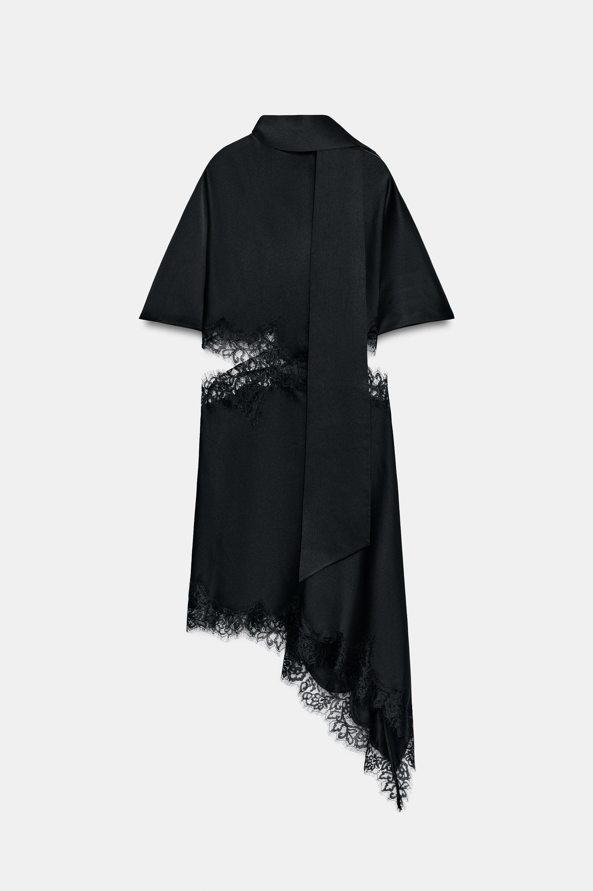
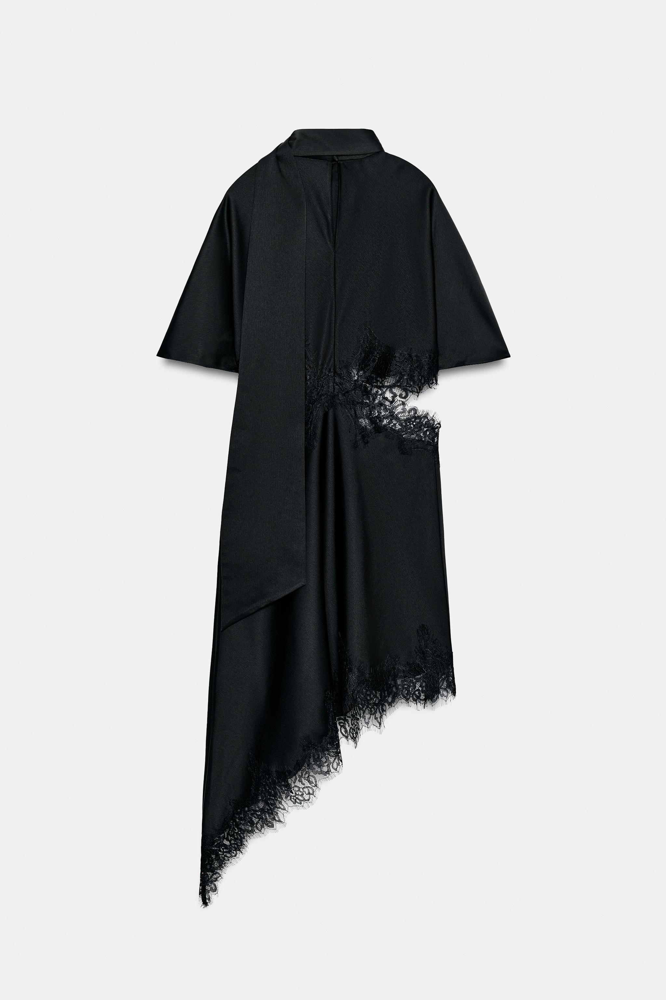

02 / Menswear Direction
Shanghai based / 2026 portfolio
服装视觉、造型叙事、品牌方向与动态影像。每一道线、每一寸黑色、每一次露肤，都要有理由。
View work平庸不是选项。
静态是骨架，动态是记忆。
好看只是开始，态度才会留下。
每个像素，每一道缝线，都要有理由。

以黑色面料、蕾丝切口和不对称衣摆建立身体与空间的张力。设计重点不是堆叠细节，而是让轮廓自己说话。



从情绪板、廓形、面料到视觉识别，建立一个系列能被记住的核心语言。
负责造型、构图、节奏与镜头情绪，让作品图不只是记录，而是观点。
把静态作品转译为可滚动、可观看、可联系的数字体验。
命名、文案、社媒内容与发布页面，统一成一套有态度的表达系统。
找到身体、材料、品牌和观看者之间真正的冲突。
用廓形和比例建立第一眼的记忆点。
让拍摄、动态和网页排版共同完成叙事。
交付可展示、可传播、可继续扩展的作品系统。